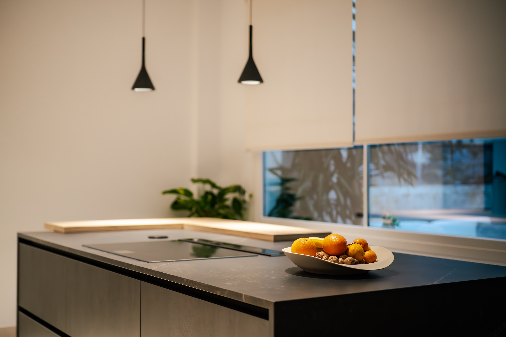
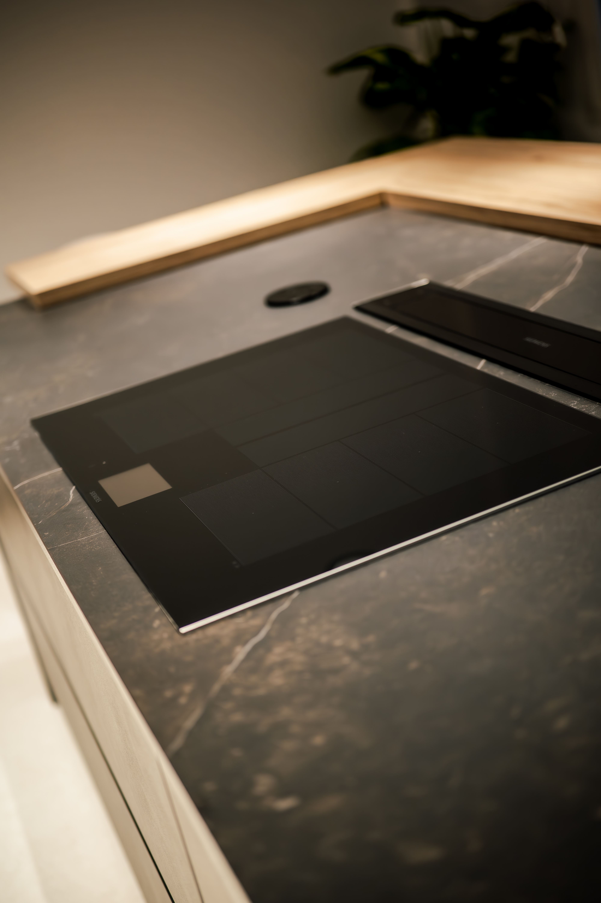
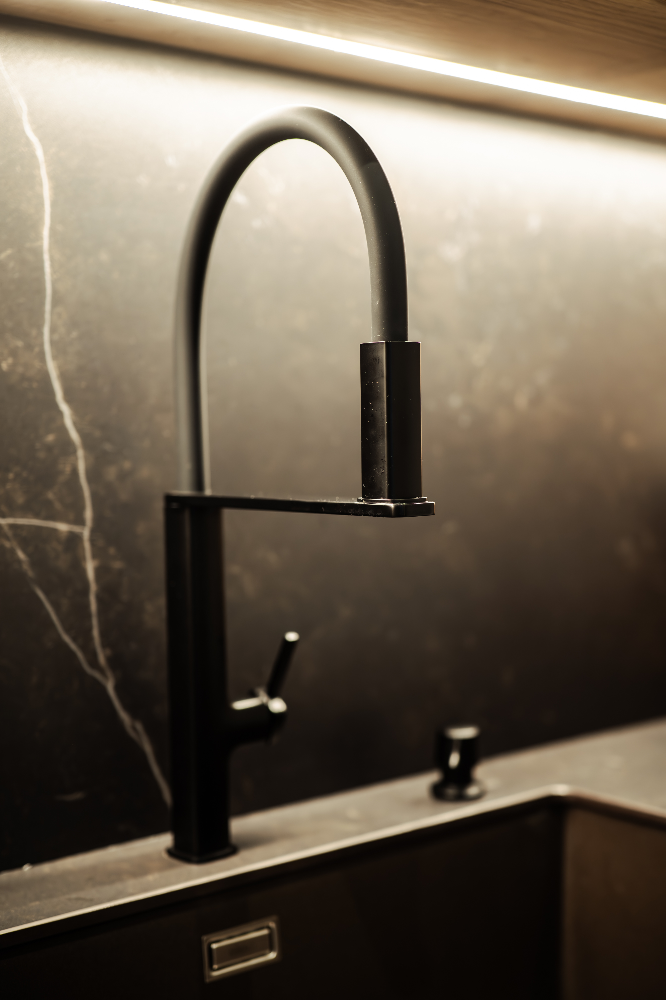

«No soy difícil de satisfacer,
me conformo con lo mejor.»
En la cocina como en casa
Para el proyecto con Kocina Sevilla, el objetivo fue capturar la esencia de sus diseños: espacios que combinan estética premium y funcionalidad real. En esta sesión fotográfica, nos enfocamos en cómo la luz natural interactúa con los materiales y acabados a medida, logrando imágenes limpias y aspiracionales que no solo muestran una cocina hermosa, sino el estilo de vida que la marca promete a sus clientes.

Fue un viaje directo a la inspiración. Nos propusimos capturar esos rincones que transforman una casa en un hogar, inmortalizando cómo el diseño inteligente se encuentra con el día a día. A través de encuadres luminosos y naturales, logramos reflejar la frescura, la comodidad y esa atmósfera acogedora que invita a compartir momentos, demostrando que sus cocinas están hechas para disfrutarse con los cinco sentidos.
La magia de la fotografía






Ficha Técnica
Fotografía
Marisabfilm
Color
Marisabfilm
Cámaras & Ópticas
Panasonic Lumix S5 Mark II · 50mm
Localización
Sevilla, España
Formato Final
Digital · 4K